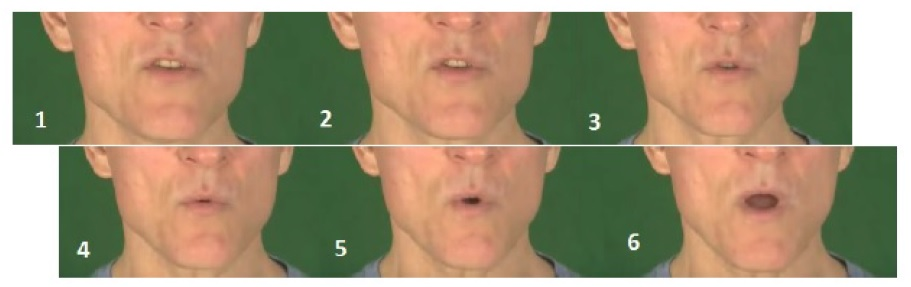
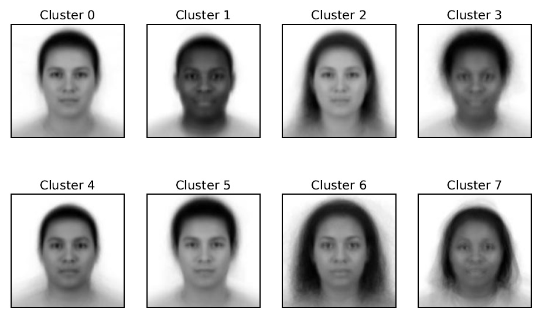

About Me
I am a student at Caltech Computing and Mathematical Sciences. My interests are statistical machine learning, computational computer vision, and optimization theory, and problems. I'm currently working on noise removal methods in decision tree and neural network frameworks, with guidance from Professor Yisong Yue and Doctor Taehwan Kim.
Papers
(In Progress) Noise Removal Methods in Sliding Window Decomposed Decision Tree Model for Spatiotemporal Sequence Prediction, Jiyun Xiao, Taehwan Kim, Yisong Yue
Keywords: Spatiotemporal sequence prediction, visual speech generation, random noise, RPCA, proximal gradient algorithm, decision tree. Link to the pdf.
(CS159 report) Multi-armed Bandits for Visual Preference Prediction , Tobias Bischoff, Jiyun Xiao, Brennan Young
Keywords: multi-armed bandit, visual preference prediction, face recognition, UCB algorithm, dimensionality reduction, user study. Link to the pdf.
Others
I like boxing and composing. My music sketches can be found at here